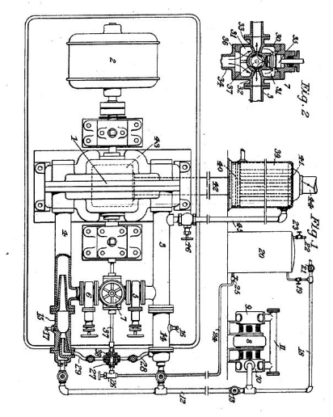
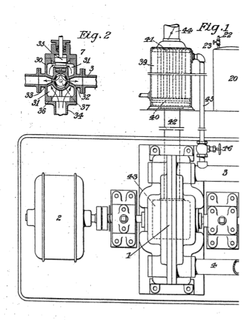
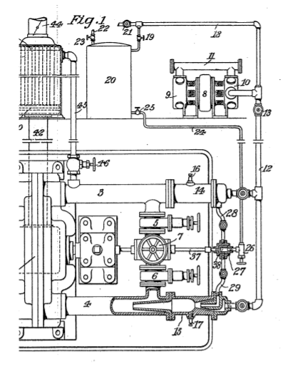

Descarga la patente original en esté enlace




Yo, Nikola Tesla, ingeniero mecánico y eléctrico, ciudadano de los Estados Unidos de América, de 8, West 40 Street, Nueva York, EE. UU., Por la presente declaro que la naturaleza de esta invención es la siguiente:
El objetivo principal de mis mejoras es aumentar la eficiencia de las centrales eléctricas de vapor existentes y los transformadores termodinámicos operados a partir de ellas, pero también pueden aplicarse con un efecto similar aparte de los establecimientos actuales y están destinados al amplio propósito de producir fuerza motriz. , más económicamente, a través del medio de vapor.
Es bien sabido que a pesar de la multiplicación de las instalaciones de motores hidroeléctricos y de gas, el vapor sigue siendo la principal fuente de energía, pero por regla general solo se asegura una baja eficiencia de combustible debido a las limitaciones inherentes al propio proceso térmico, como ahora llevado a cabo, y ciertas deficiencias de las formas actuales de aparatos. Además, los planes que se han contemplado hasta ahora para la consecución de una mejor economía generalmente implican obstáculos técnicos, cambios más o menos radicales y gastos necesariamente considerables. Por ejemplo, con el fin de minimizar las pérdidas de calor provocadas por la elevación de vapor, se ha sugerido quemar el combustible junto con aire en la caldera y hacer funcionar los motores mediante la mezcla de vapor y gas así obtenida. Sin embargo, hasta ahora los intentos de efectuar la combustión satisfactoriamente en tales condiciones no han tenido mucho éxito. Se han propuesto grandes presiones con el mismo fin, pero todavía no se ha avanzado mucho en esa dirección; de hecho, muchos ingenieros ven estos proyectos con desaprobación, ya que presentan una serie de características objetables y las posibilidades de mejora están limitadas. De nuevo, el empleo del recalentamiento como medio para aumentar la eficiencia del combustible es factible sólo en cierta medida porque los tipos adoptados de motores primarios no se prestan a altas temperaturas que, de conformidad con las leyes fundamentales de la termodinámica, son indispensables para tal realización completa. . de hecho, muchos ingenieros ven estos proyectos con desaprobación, ya que presentan una serie de características objetables y las posibilidades de mejora están limitadas. De nuevo, el empleo del recalentamiento como medio para aumentar la eficiencia del combustible es factible sólo en cierta medida porque los tipos adoptados de motores primarios no se prestan a altas temperaturas que, de conformidad con las leyes fundamentales de la termodinámica, son indispensables para tal realización completa. . de hecho, muchos ingenieros ven estos proyectos con desaprobación, ya que presentan una serie de características objetables y las posibilidades de mejora están limitadas. De nuevo, el empleo del recalentamiento como medio para aumentar la eficiencia del combustible es factible sólo en cierta medida porque los tipos adoptados de motores primarios no se prestan a altas temperaturas que, de conformidad con las leyes fundamentales de la termodinámica, son indispensables para tal realización completa.
Estos inconvenientes se han superado con éxito en el método que he ideado, que es muy económico, fácilmente aplicable a las plantas ahora en funcionamiento sin modificaciones apreciables en ellas, y se vuelve particularmente ventajoso gracias a la instrumentalidad de una turbina o motor rotatorio descrito en mi British Patente No. 24.001 de 1910 y mejoras que he realizado en su construcción desde entonces. Esta máquina es capaz de funcionar satisfactoriamente a temperaturas muy elevadas, con combustible barato, que contiene un gran porcentaje de impurezas y sin un deterioro sustancial de la eficiencia como podría deberse a la oxidación, el endurecimiento de las superficies metálicas o acciones de deterioro similares que interfieren seriamente con el funcionamiento de otros motores térmicos actualmente en uso.
Al aplicar mi invención a una planta de energía a vapor, utilizo aire, a una presión aproximadamente igual a la de la caldera, para quemar gas, petróleo crudo, combustible coloidal o carbón en polvo en una cámara o conducto en el que se admite el vapor simultáneamente como enfriamiento. agente y diluyente. Las disposiciones para este fin variarán mucho según las condiciones. En las estaciones centrales, las fábricas, a bordo de los barcos y en muchos otros lugares, se dispone de aire comprimido, así como vapor y, a menudo, también pueden estar disponibles todas las instalaciones para el almacenamiento y suministro de combustible. En tales casos, los beneficios de mis mejoras se obtendrán fácilmente con pocos aparatos adicionales y a un costo reducido. Si las circunstancias lo requieren, proporciono un compresor de aire y también de gas cuando sea necesario, impulsado directamente desde el eje del motor primario o operado independientemente por electricidad. vapor u otro agente motriz. Generalmente, estas máquinas serán del tipo alternativo más eficiente, pero se pueden emplear compresores rotativos o ambos para asegurar alguna ventaja. Independientemente de las disposiciones específicas, efectúo la combustión mientras los fluidos están en movimiento rápido y en un conducto, preferiblemente en las proximidades del motor, eliminando así la mayoría de las dificultades encontradas anteriormente y al mismo tiempo reduciendo materialmente las pérdidas de radiación y conducción que se producirían. incurrir en el paso a través de tuberías largas. Para asegurar mejor el mantenimiento de las condiciones de trabajo estándar, puedo agregar al equipo un ecualizador de presiones operado de manera diferencial por el aire y el vapor, pero este dispositivo no es esencial. La cantidad de vapor está tan regulada que la mezcla altamente calentada, al expandirse a través de la boquilla, alcanza una temperatura arbitraria que la turbina puede soportar con seguridad. Los fluidos elásticos, después de atravesar el rotor y ceder al mismo una parte de su energía cinética, escapan a través de las aberturas de escape y sirven para precalentar el agua de alimentación, el combustible e igualmente el aire cuando se desee. Si se calienta intensamente, el aire y el combustible se transportarán a la cámara de combustión por separado, pero en instalaciones pequeñas puede ser conveniente introducir el combustible en el compresor o en la tubería de aire que lleva el medio carburado a la cámara. Cuando la simplicidad es primordial, se recurrirá a serpentines o calentadores baratos para los combustibles y el agua de alimentación, pero para lograr una eficiencia térmica aún mayor utilizo, además, una pequeña caldera auxiliar por donde circula el escape. El vapor así obtenido del calor residual se alimenta a través de una válvula adecuada, que se abre a la presión adecuada, al espacio de combustión por donde pasa, junto con el suministrado por la planta, a través de la turbina haciendo primero un trabajo útil y luego añadiendo al calor residual. para ser utilizado de la manera establecida. Ahora se puede admitir gradualmente más combustible para mantener la temperatura normal, aumentando nuevamente el calor en el escape y provocando una generación más rápida del vapor, y así sucesivamente, hasta que finalmente se establezca un régimen estable. Sin embargo, si se considera ventajoso en determinadas condiciones operativas, el vapor de la caldera principal puede reducirse en cantidad aproximadamente en la misma medida en que se suministra el vapor de la caldera auxiliar. junto con el suministrado por la planta, a través de la turbina haciendo primero un trabajo útil y luego sumando al calor residual para ser aprovechado de la manera establecida. Ahora se puede admitir gradualmente más combustible para mantener la temperatura normal, aumentando nuevamente el calor en el escape y provocando una generación más rápida del vapor, y así sucesivamente, hasta que finalmente se establezca un régimen estable. Sin embargo, si se considera ventajoso en determinadas condiciones operativas, el vapor de la caldera principal puede reducirse en cantidad aproximadamente en la misma medida en que se suministra el vapor de la caldera auxiliar. junto con el suministrado por la planta, a través de la turbina haciendo primero un trabajo útil y luego sumando al calor residual para ser aprovechado de la manera establecida. Ahora se puede admitir gradualmente más combustible para mantener la temperatura normal, aumentando nuevamente el calor en el escape y provocando una generación más rápida del vapor, y así sucesivamente, hasta que finalmente se establezca un régimen estable. Sin embargo, si se considera ventajoso en determinadas condiciones operativas, el vapor de la caldera principal puede reducirse en cantidad aproximadamente en la misma medida en que se suministra el vapor de la caldera auxiliar. esto de nuevo aumentando el calor en el escape y provocando una generación más rápida de vapor, y así sucesivamente, hasta que finalmente se establece un régimen estable. Sin embargo, si se considera ventajoso en determinadas condiciones operativas, el vapor de la caldera principal puede reducirse en cantidad aproximadamente en la misma medida en que se suministra el vapor de la caldera auxiliar. esto de nuevo aumentando el calor en el escape y provocando una generación más rápida de vapor, y así sucesivamente, hasta que finalmente se establece un régimen estable. Sin embargo, si se considera ventajoso en determinadas condiciones operativas, el vapor de la caldera principal puede reducirse en cantidad aproximadamente en la misma medida en que se suministra el vapor de la caldera auxiliar.
Este plan proporciona un motor primario de arranque automático eficiente que se puede operar como una turbina de vapor o de fluido mixto a voluntad, sin cambios en la construcción y, por lo tanto, es muy conveniente. Evidentemente, se sugerirán pequeñas desviaciones de la misma, según lo dicten las circunstancias en cada caso, pero si se lleva a cabo en estas líneas generales, resultará altamente rentable para los propietarios de la planta de vapor, al tiempo que permitirá el uso de sus antiguas instalaciones. instalación. Sin embargo, los mejores resultados económicos en el desarrollo de energía a partir del vapor por mi invención se obtendrán en plantas especialmente adaptadas para este propósito. Cabe agregar que este método también se puede aplicar con éxito a plantas de condensación que operan con alto vacío. En tal caso, debido a la gran relación de expansión, la mezcla de escape estará a una temperatura relativamente baja y adecuada para la admisión al condensador. Es necesario utilizar mejor combustible y proporcionar instalaciones especiales de bombeo, pero los resultados económicos obtenidos justificarán plenamente el mayor desembolso.
Fechado el 24 de marzo de 1921.
Nikola Tesla.
Yo, Nikola Tesla, ingeniero eléctrico y mecánico, ciudadano de los Estados Unidos de América, de No. 8, West 40th Street, Nueva York, NY, EE. UU., Declaro por la presente la naturaleza de esta invención y de qué manera la misma debe realizarse, que se describirá y determinará en particular en y mediante la siguiente declaración:
El objeto principal de mis mejoras es aumentar la eficiencia de las centrales eléctricas de vapor existentes y los transformadores termodinámicos operados a partir de ellas, pero también pueden aplicarse con el mismo efecto aparte de los establecimientos actuales y están destinados al propósito amplio de producir fuerza motriz, de manera más económica. , a través del medio de vapor mezclado con los productos de combustión calentados, mientras que el aparato es capaz de actuar solo con vapor. Es bien sabido que a pesar de la multiplicación de las instalaciones de motores hidroeléctricos y de gas, la mayor parte de la fuerza motriz todavía se deriva de este agente, pero solo se asegura una eficiencia de combustible relativamente baja debido a las limitaciones inherentes al proceso térmico en sí, como ahora llevada a cabo, y ciertas deficiencias de las formas actuales de aparatos.Patente británica No. 24.001 de 1910 y mejoras que he realizado en su construcción desde entonces. Esta máquina es capaz de funcionar satisfactoriamente a temperaturas muy altas, con combustible barato que contiene un gran porcentaje de impurezas y sin deterioro material de la eficiencia como podría deberse a la oxidación, rugosidad de las superficies metálicas o acciones de deterioro similares que interfieren seriamente con el trabajo. de otros motores térmicos.
Al aplicar mi invento a una central eléctrica de vapor, utilizo aire, a una presión aproximadamente igual a la de la caldera, para quemar gas, petróleo crudo, combustible coloidal o carbón en polvo en una cámara o conducto, los productos de la combustión escapan del mismo. mezclándose con el vapor en su camino a la turbina siendo así diluido y enfriado a la temperatura deseada. Las disposiciones para este fin variarán mucho según las condiciones. En las estaciones centrales, las fábricas, a bordo de los barcos y en muchos otros lugares, se dispone de aire comprimido, así como vapor y, a menudo, también pueden estar disponibles todas las instalaciones para el almacenamiento y suministro de combustible. En tales casos, los beneficios de mis mejoras se obtendrán fácilmente con pocos aparatos adicionales y a un costo reducido. Si las circunstancias lo requieren, Proporciono un compresor de aire, y en ocasiones también de gas, impulsado directamente desde el eje del motor primario o de forma independiente mediante electricidad, vapor u otro agente motriz. Generalmente, estas máquinas serán del tipo alternativo más eficiente, pero se pueden emplear compresores rotativos o tipos compuestos para asegurar alguna ventaja. Independientemente de las disposiciones específicas, efectúo la combustión y la mezcla mientras los fluidos están en movimiento rápido en un conducto que está, preferiblemente, en las proximidades de la turbina, eliminando así la mayoría de las dificultades mencionadas anteriormente y al mismo tiempo reduciendo considerablemente las pérdidas por radiación y conducción que se producirían en el paso por tuberías largas. Para asegurar mejor el mantenimiento de las condiciones de trabajo estándar, Puedo agregar al equipo un dispositivo de la construcción habitual para igualar las presiones de vapor y aire. La cantidad de vapor está tan regulada que la mezcla altamente calentada, al expandirse a través de la boquilla, entra en la turbina a una temperatura que la máquina puede soportar con seguridad. Los fluidos elásticos, después de atravesar el rotor y ceder al mismo una parte de su energía cinética, escapan por las aberturas de escape y pueden servir para el propósito adicional de precalentar el agua de alimentación, el combustible y también el aire cuando se desee. Si se precalienta intensamente, el aire y el combustible se transportarán a la cámara de combustión o al conducto por separado, pero en instalaciones pequeñas puede ser conveniente alimentar el combustible al compresor o al tubo de aire produciendo así una mezcla completa de los combustibles. Cuando la sencillez es de suma importancia, Se puede recurrir a calentadores para mejorar la economía, pero para lograr una eficiencia térmica aún mayor, proporciono una caldera a través de la cual circulan los fluidos de trabajo, extraídos de la turbina. El vapor así obtenido del calor residual se alimenta a través de una válvula adecuada, a una tubería de entrada desde donde pasa por separado o junto con el fluido de trabajo mezclado a través de la boquilla, primero realizando un trabajo útil y luego añadiendo calor residual del escape. Ahora se puede admitir gradualmente más combustible para mantener en la tubería de entrada la temperatura normal, aumentando así nuevamente el calor en el escape y provocando una generación más rápida del vapor, y así sucesivamente, hasta que finalmente se establezca un régimen estable. Sin embargo, si se considera ventajoso en determinadas condiciones operativas.
Mi invención se entenderá más completamente haciendo referencia a los dibujos adjuntos en los que la Figura 1 ilustra la disposición general del aparato que comprende la turbina, un compresor, un tanque de almacenamiento para el combustible, una caldera y las conexiones de tubería necesarias y dispositivos de control, y La figura 2 muestra una sección vertical de la válvula principal de admisión del vapor y regulación de su flujo.
En la primera figura nombrada, 1 representa mi turbina con su eje acoplado de manera flexible a una máquina que realiza un trabajo útil, como dínamo 2. La construcción general de la turbina es preferiblemente como se describe en mi patente británica No. 24.001 de 1910 , se proporcionan dos boquillas , que están destinados a funcionar en la misma dirección. Las boquillas están contenidas en dos ampliaciones diametralmente opuestas de la carcasa y se comunican con las tuberías de entrada 3 y 4 que se unen, a través de las válvulas 5 y 6 adecuadas, a la válvula principal de control y admisión de vapor 7, que se muestra en la sección Figura 2 y se describirá en detalle.
El compresor de aire puede ser de cualquier tipo, pero se muestra del tipo alternativo de alta velocidad, accionado por un motor eléctrico 8, y que comprende dos etapas 9 y 10, con un intercooler 11. Una tubería 12 que lleva la válvula 13 conecta el conducto de descarga de el compresor a los conductos bridados 14 y 15 que están atornillados a los tubos de entrada 3 y 4 como se indica y equipados con medios de encendido, como bujías 16 y 17. Una extensión 18 del tubo 12 conduce a través de una válvula 19, hasta la parte superior de el depósito de combustible 20 y sirve para mantener en este último la presión requerida. Cuando se considere preferible el empleo de un depósito de aire, la extensión 18 se pondrá en comunicación con la misma a través de la válvula 21. Una tubería de llenado 22, armada con la válvula 23.
La válvula principal 7 está diseñada para controlar el flujo de vapor tanto por medios automáticos como independientemente de los mismos. Su construcción está claramente indicada en la Figura 2, que representa una sección transversal vertical. El dispositivo consiste en una fundición 30 con puertos de entrada 31 y salidas 32 y 33, que están unidas por bridas a las tuberías 3 y 4. La parte inferior abierta de la fundición está conectada a una tubería de entrada de vapor 34 mientras que la parte superior lleva una válvula de mariposa 35 para encender y apagar el vapor. Debajo del asiento de esta válvula, la pieza fundida tiene un orificio transversal, en el que se encaja libremente un cilindro hueco 36 con aberturas de admisión y escape equilibradas, coincidiendo esta última con las salidas 32 y 33 de la pieza fundida. El cilindro 36 está unido rígidamente a través de una varilla 37 con un émbolo hueco 38 (Fig).
La caldera 39, que puede ser del tipo tubular vertical como se ilustra, está conectada a través de sus cabezales 40 y 41 en el extremo inferior a la tubería principal 42 que comunica con la abertura de escape 43 de la turbina, y en la superior al conducto de descarga 44 a través de donde los fluidos calientes, después de atravesar los tubos de la caldera, escapan a la atmósfera o son conducidos a un economizador para precalentar el agua de alimentación o utilizar de otro modo el calor residual. Un conducto 45 une la parte superior de la caldera al tubo de entrada 3 a través de una válvula adecuada 46 que puede accionarse manualmente o automáticamente.
A partir de lo anterior, ahora se entenderá fácilmente la operación. Cuando la válvula de arranque 46 está cerrada y 5 y 6 abierta, el vapor de la planta es admitido a través del acelerador y la válvula de control 7 desde donde pasa a los tubos de entrada 3 y 4 y boquillas comunicantes de las que sale a alta velocidad poniendo el rotor en movimiento. , la máquina opera únicamente como una turbina de vapor. Entonces se ponen en juego las bujías 16 y 17 y se abren las válvulas 13, 19 y 25, permitiendo esta última que el combustible fluya desde el tanque, principalmente por acción de la gravedad, a la válvula de aguja 26 que se abre gradualmente. A continuación, el combustible pasa a través de las lumbreras del émbolo hueco 38 y las tuberías 28 y 29 hacia el aparato de mezcla y combustión, cuya construcción se muestra claramente en la sección transversal de la rama inferior. en el entendido de que la disposición en la rama superior es idéntica. Como se verá, el conducto 15 está armado en un extremo con un dispositivo de pulverización y en el otro con una extensión en forma de embudo que se sujeta firmemente entre las bridas y se proyecta hacia el interior del tubo de entrada de vapor 4. El combustible, atomizado por el aire que entra , ingresa a la cámara de combustión formada por un ensanchamiento en el conducto 15, y luego se enciende en el mismo, escapando los productos de la combustión al tubo de entrada 4 y mezclándose con el vapor en su camino hacia la boquilla. Este tipo de aparato supera la dificultad encontrada hasta ahora en los intentos de efectuar la combustión de manera práctica y funcionará satisfactoriamente incluso si hay fluctuaciones considerables en las presiones de vapor y aire, ya que el fluido que se mueve más rápido aspira al más lento. Se ha supuesto que se usa combustible líquido pero también se puede emplear carbón en polvo sustancialmente de la misma manera con ligeras modificaciones constructivas, siendo transportado el polvo a la cámara de combustión independientemente del aire o con él. La cantidad de combustibles está regulada de tal modo mediante la manipulación de las válvulas 13 y 26 (y también 5, 6 y estrangulador 7, si corresponde) que la mezcla, que escapa de las boquillas, estará a una temperatura considerada segura para el funcionamiento de la turbina. . Para facilitar esto, se puede prever cualquiera de las válvulas compuestas conocidas con el fin de admitir los combustibles siempre en las proporciones requeridas independientemente de su cantidad total. siendo transportado el polvo a la cámara de combustión independientemente del aire o con él. La cantidad de combustibles está regulada de tal modo mediante la manipulación de las válvulas 13 y 26 (y también 5, 6 y estrangulador 7, si corresponde) que la mezcla, que escapa de las boquillas, estará a una temperatura considerada segura para el funcionamiento de la turbina. . Para facilitar esto, se puede prever cualquiera de las válvulas compuestas conocidas con el fin de admitir los combustibles siempre en las proporciones requeridas independientemente de su cantidad total. siendo transportado el polvo a la cámara de combustión independientemente del aire o con él. La cantidad de combustibles está regulada de tal modo mediante la manipulación de las válvulas 13 y 26 (y también 5, 6 y estrangulador 7, si corresponde) que la mezcla, que escapa de las boquillas, estará a una temperatura considerada segura para el funcionamiento de la turbina. . Para facilitar esto, se puede prever cualquiera de las válvulas compuestas conocidas con el fin de admitir los combustibles siempre en las proporciones requeridas independientemente de su cantidad total.
Cuando el vapor de la caldera 39, elevado por la mezcla de escape que pasa por los tubos, alcanza la presión requerida, es admitido a través de la válvula 46, conducto 3 y boquilla correspondiente, al rotor, añadiendo energía cinética al mismo. El agua de alimentación, preferiblemente calentada por el escape de la turbina, se suministra a la caldera en la misma medida en que se extrae el vapor, utilizándose cualquier medio ordinario para este fin.
El control automático del flujo de vapor y combustible puede efectuarse mediante cualquier tipo de regulador de velocidad conectado operativamente a la varilla 37 de modo que el suministro se reduce a medida que aumenta la velocidad. Además de los medios mostrados, puede proporcionarse una válvula de aire, accionada automáticamente por el gobernador a través de la varilla 37 o de otro modo. Para mayor comodidad y para permitir el control independiente del suministro de aire y combustible en las dos ramas, los conductos 14, 15 y los conductos 28, 29 pueden equiparse con válvulas, indicadas en la figura 1, cuya numeración se considera innecesaria.
La cantidad de energía que se puede obtener de la caldera 39 variará según las condiciones. Las turbinas descritas en mi especificación anterior son capaces de funcionar a una temperatura de escape muy alta y luego la energía recuperada del calor residual de esta manera puede ser una gran fracción del trabajo útil total. En tal caso, el conducto 3, las tuberías 14 y 28 junto con todos sus accesorios, como se ilustra, pueden omitirse y el vapor se suministra directamente a la boquilla a través de la válvula 46. O estas conexiones y accesorios pueden dejarse intactos y proporcionarse una boquilla separada. Al admitir el vapor de la caldera al rotor de la turbina a través de canales independientes, se asegura la ventaja práctica de que la presión puede variar considerablemente sin restar mucho a la eficiencia de la máquina.
Este plan proporciona una turbina de fluido mixto de arranque automático eficiente que también puede funcionar con vapor solo, simplemente cortando el suministro de aire y combustible, y por este motivo es muy conveniente. Evidentemente, se sugerirán pequeñas desviaciones de él, según lo dicten las circunstancias, pero si se lleva a cabo en estas líneas generales, resultará muy rentable para los propietarios de la planta de vapor, al tiempo que permitirá el uso de su antigua instalación. Sin embargo, los mejores resultados económicos en el desarrollo de energía a partir del vapor por mi invención se obtendrán en plantas especialmente adaptadas para este propósito. Cabe agregar que este método también se puede aplicar con éxito a plantas de condensación que operan con alto vacío. La producción y el mantenimiento de este último se verán facilitados materialmente por el empleo de una bomba como se muestra en mi patente británica antes mencionada. En tales casos, debido a la gran relación de expansión, la mezcla de escape estará a una temperatura relativamente baja y será adecuada para la admisión al condensador. Esto requerirá mejores instalaciones de bombeo de combustible y especiales, pero los resultados económicos obtenidos justificarán plenamente el mayor desembolso.
Habiendo ahora descrito y comprobado en particular la naturaleza de mi dicho invento y de qué manera se realizará el mismo, declaro que lo que reclamo es:
Fechado el día 23 de agosto de 1921.
Nikola Tesla.